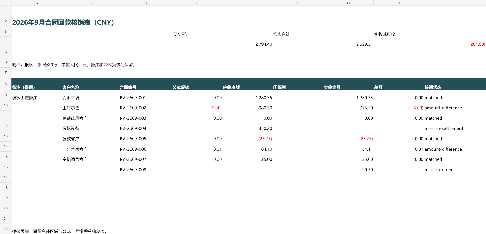

DSH SheetFlow 发布前验收
2026-10-01 · 本地预览版 · 尚未上传 GitHub
真实模型闭环：经两处修正后完成
deepseek-v4-pro / max 自行检查新建表格并提出映射。列映射、分笔规则和模板区域正确；来源表头行号需从 2→3、3→4 修正。原始建议被表头保护拦截，没有写入错误模板。
本次复核和导出由 Codex 作为测试执行人员完成，不是用户本人签字。所有数据均为新建合成数据，只证明这一次经复核的闭环，不证明全自动映射或生产财务兼容性。
模型事件耗时
34.660 秒
记录 / 一致 / 异常
8 / 4 / 4
应收 / 实收
2,794.40 / 2,529.51
Tokens：输入 9125，缓存读取 39040，输出 3712。只有本轮真实模型请求，没有为改进后的提示另做付费测试。
原始映射 · 修正与拦截记录 · 真实会话用量和工具调用 · 准备阶段摩擦
最终结果
| 业务编号 | 应收 | 实收 | 差额 | 状态 |
|---|
| RV-2609-001 | 1280.35 | 1280.35 | 0.00 | matched |
| RV-2609-002 | 980.50 | 975.50 | -5.00 | amount-difference |
| RV-2609-003 | 0.00 | 0.00 | 0.00 | matched |
| RV-2609-004 | 350.20 | 空白 | 空白 | missing-settlement |
| RV-2609-005 | -25.75 | -25.75 | 0.00 | matched |
| RV-2609-006 | 84.10 | 84.11 | 0.01 | amount-difference |
| RV-2609-007 | 125.00 | 125.00 | 0.00 | matched |
| RV-2609-008 | 空白 | 90.30 | 空白 | missing-order |
合计差额 −264.89 元。四条异常仍保留，勾选不代表异常解决或财务批准。原始三份文件 SHA-256 不变。
导出 XLSX · 完整来源与单元格差异 HTML · JSON 来源记录
公式、格式与应用验证
发布前人工验收指引（5 点，约 2 分钟）：汇总与错误、标题及说明合并、D 列公式动态计算、8 行金额及状态、页脚与备注。请在全部通过后回复“Excel 检查通过”。
独立导入重算验证汇总、分笔、一分钱差异、退款、零值及缺项空白。原模板 15 个公式表达式、198 个单元格样式、3 个合并区域、固定备注和页脚保留。此处独立工具检查不等于 Excel 验收。
PM 终审附条件通过。Microsoft Excel 完整验收改由用户手动完成；停止加载项及原生 UI 自动化。尚未收到“Excel 检查通过”，不创建仓库、不 push、不发布；本次不发布 npm。
独立重算 · 文件级保留比对

本轮改进与终审边界
文件检查新增绝对行号并要求模型提交前再次核对精确表头。26 项核心测试、3 项浏览器测试、严格类型检查和构建通过。改进未做第二次真实模型测试。中英文 README 顶部已加财务免责声明。
模型会话最初有两次工作区选择摩擦；详细证据如实保留。复杂业务工作簿、其他模型、宏、透视表及其他 DSH 版本未验证。发布等待用户终审。
完整文字验收记录 · 新数据哈希 · 本次测试构建与后续改进边界